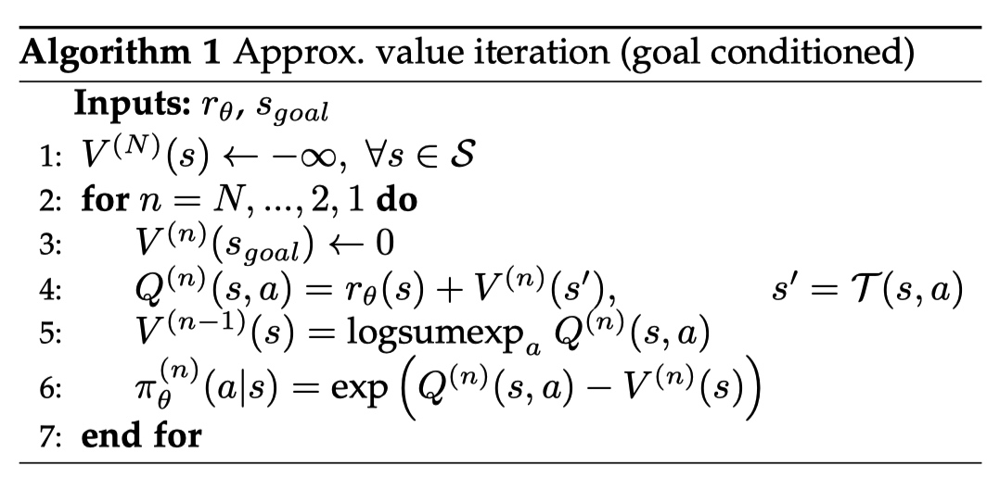
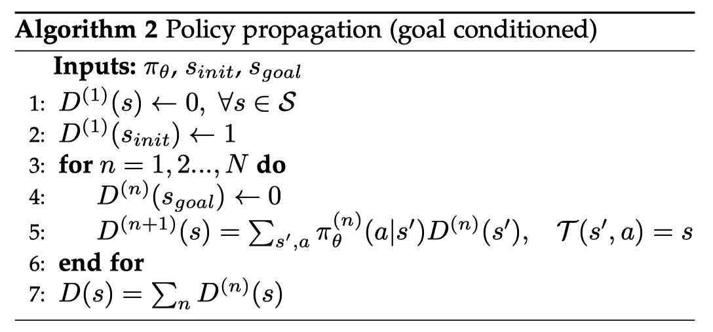
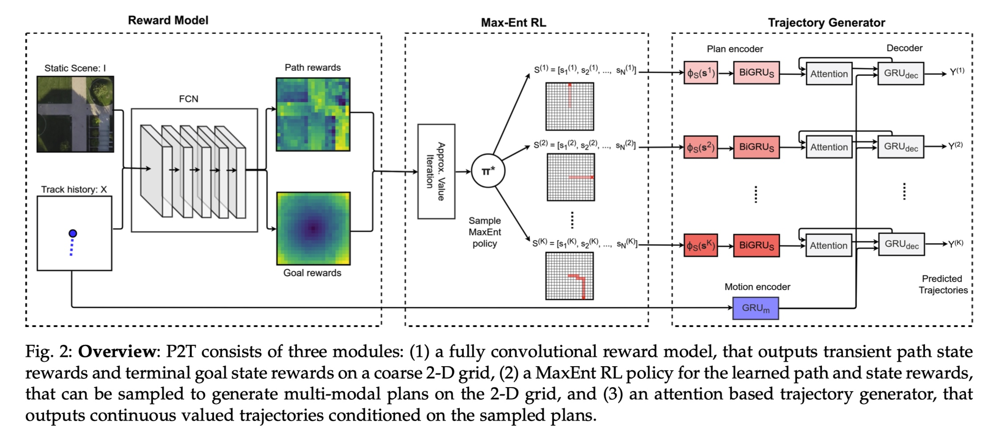
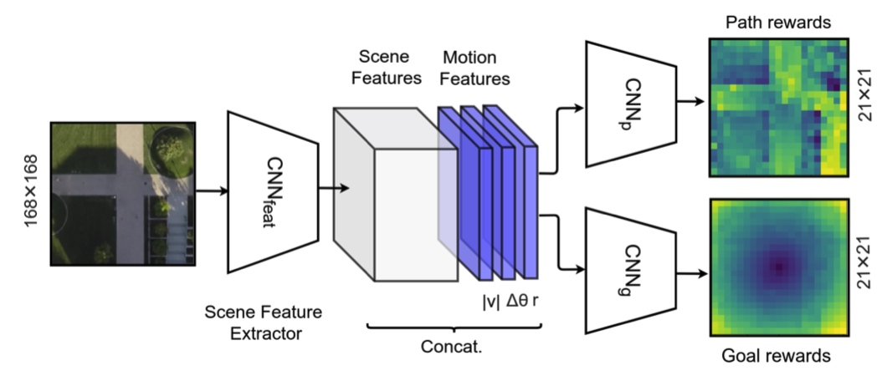
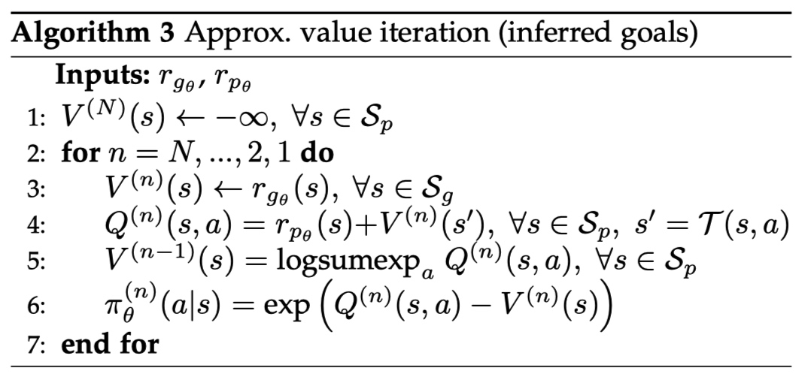
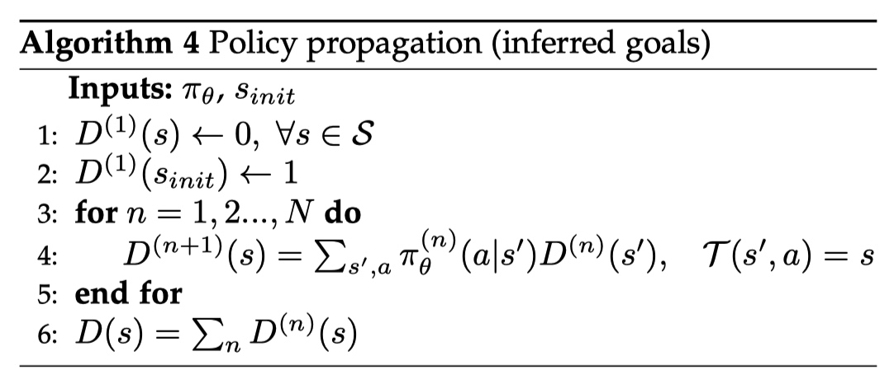
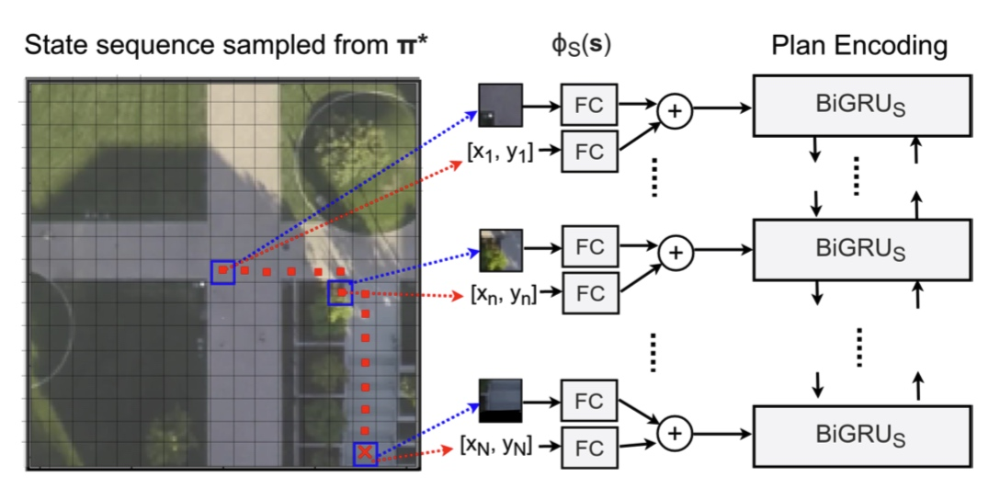
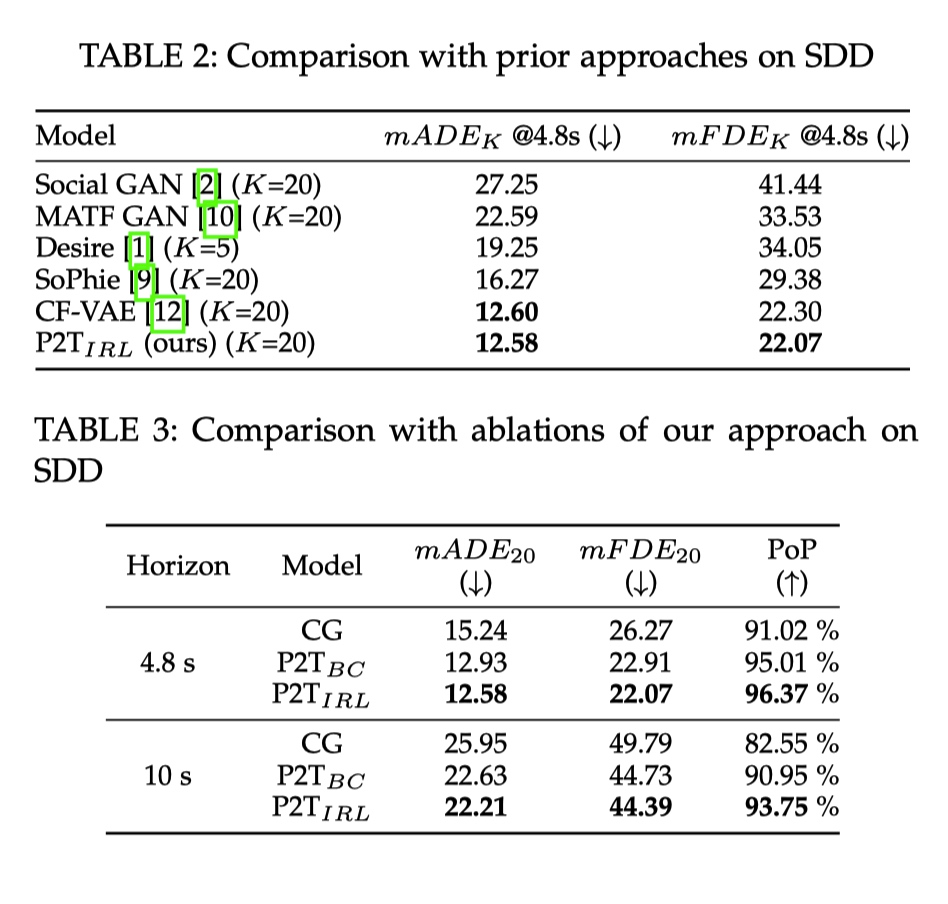

Introduction
This paper proposes P2TIRL that uses a maximum entropy inverse reinforcement learning policy to infer goal and trajectory plan over a discrete grid. P2TRL assigns rewards to future goals that are learned by the training policy which is slow and computationally expensive.
Authors:
- Nachiket Deo
- Mohan M. Trivedi
Maximum Entropy Inverse Reinforcement Learning for Path Forecasting
Markov Decision Process
- $S$: the state space consisting of cells in a 2-D grid defined over the scene.
- $A$: action space consisting of 4 discrete actions: {up,down,left,right}
- $T$: state transition function where $S_{n-1} \times A \rightarrow S_n$
- $r$: reward function mapping each state to a real value less or equal to 0
Probability Formation
- $Z$ is the normalising constant for $\sum{P} =1$
- $r_\theta(s)$ is the reward function parameterised by $\theta$
Object
The objective is to learn a reward function that maximises the log likelihood of observing a training set of demonstrations $\tau \in T = {\tau_1,\tau_2, \cdots, \tau_n}$
This can be solved using
- $D$ is the state visitation algorithm
- calculate $\pi_\theta(a|s)$: the probability of taking action $a$ given state $s$

- calculate $D$ using $\pi_\theta$

- calculate $\pi_\theta(a|s)$: the probability of taking action $a$ given state $s$
Model Architecture

Reward Learning

Path reward:
Goal reward
- $\phi I = CNN{feat}(I)$
- $\phi _M = [|v|, \Delta \theta, r]$ where
- $|v|$: speed
- $\Delta \theta$: angular deviation between a cell location and the instantaneous direction of the agents’ motion.
- $r$: distance
- $CNN_{feat}(I)$ is pretrained on ISPRS Potsdam dataset
Approximate Value Iteration with inferred goals

- Main difference:
- Do not hold the $V(s_{goal})$ fixed at 0 to enforce goal directed behavior.

- Do not hold the $V(s_{goal})$ fixed at 0 to enforce goal directed behavior.
Trajectory Generator
Motion encoder:
- $e_x(\cdot)$ is a fully connected embedding layer for the track co-ordinates.
Plan encoder:

- two inputs concatenated as the input:
- position coordinate
- scene patch
Attention based Encoder
- $h_0$: final hidden state from motion encoder
- Attention mechanism: soft attention
- Pay attention to a specific state
- Decoder: $GRU$
Results
